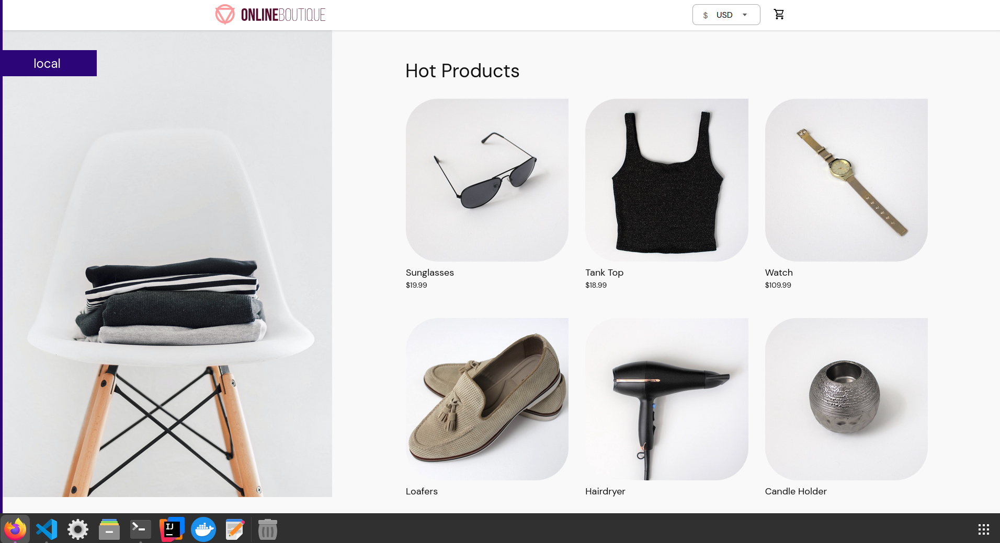

This module has been the toughest yet for me conceptually. I'm still digesting how all the components of Kubernetes fit together and how they interact. Writing YAML is its own adjustment — by the time this project was done I had written the same Deployment/Service skeleton eleven times, each one slightly different from the last.
Before getting to the main project, I worked through four demos that built up the baseline:
- Deploy MongoDB and MongoExpress into a local K8s cluster
- Deploy a Mosquitto message broker with ConfigMap and Secret volume types
- Install a stateful MongoDB service on Kubernetes using Helm
- Deploy a web application from a private Docker registry
By the end of those I had a working mental model of Pods, Deployments, Services, and namespaces. Then came the big project: deploy Google's microservices demo on a real cluster, then harden it with production and security best practices. This is what most of the module was building toward.
What I had going in: Kubernetes fundamentals, some Helm experience, persistent volume concepts. What this project added: multi-service dependency management, YAML debugging on a real cluster, and a working understanding of why Kubernetes best practices exist — not just what they are.
Understanding What I Was Deploying
Before writing a single line of YAML, I needed to understand the application. The demo is Google's Online Boutique — a realistic e-commerce microservices app written in multiple languages (Go, Python, Java, Node.js, C#). Eleven services, each responsible for exactly one thing.
In a real environment, developers give you this information. For a public demo, it's in the documentation. Either way, there are four questions you need answered before writing config for a microservices application:
- What services are being deployed?
- How do they connect to each other?
- Are there any third-party services or databases? (Redis, in this case)
- Which service is accessible from outside the cluster? (The frontend)
The architecture diagram answered all four at once:

Every arrow in that diagram is an environment variable. The frontend has seven arrows pointing out — seven env vars to configure. The checkout service has six. Miss one and the application crashes at runtime, not at deploy time. I'd find this out the hard way.
You also need to know the image name and port for each service. These come from the developers or the docs. Frontend runs on 8080, product catalog on 3550, payment and shipping on 50051. A port mismatch between the Deployment and Service won't cause an immediate error — it'll just silently fail to route traffic.
Part 1: Building the Configuration
The skeleton for every service is the same: a Deployment and a Service. The Deployment manages the Pod. The Service gives it a stable network address inside the cluster.
---
apiVersion: apps/v1
kind: Deployment
metadata:
name: xxxx
spec:
selector:
matchLabels:
app: xxxx
template:
metadata:
labels:
app: xxxx
spec:
containers:
- name: xxxx
image: xxxx
ports:
- containerPort: xxxx
---
apiVersion: v1
kind: Service
metadata:
name: xxxx
spec:
type: ClusterIP
selector:
app: xxxx
ports:
- protocol: TCP
port: xxxx
targetPort: xxxxThis repeated eleven times in a single config.yaml, separated by ---. The challenge wasn't the structure — it was filling in the right values and getting service dependencies in the right order.
The Dependency-First Approach
Some services need to know the address of others. The recommendation service needs to reach the product catalog. That address is just the service name and port: productcatalogservice:3550. But I couldn't set that value until I knew the product catalog's service name — which I hadn't written yet.
The approach: write the dependency first, then fill in the placeholder.
So I'd write the recommendation service with a temporary value:
env:
- name: PORT
value: "8080"
- name: PRODUCT_CATALOG_SERVICE_ADDR
value: "xxxx" # fill in after writing productcatalogserviceWrite the product catalog service. Now the name and port are defined, so I go back and fill in the placeholder:
- name: PRODUCT_CATALOG_SERVICE_ADDR
value: "productcatalogservice:3550"The cart service did the same with Redis — write Redis first, then come back and fill in REDIS_ADDR: "redis-cart:6379". Checkout needed six other services wired up. Working dependency-first kept the whole thing from becoming a wall of unknowns.
Redis and the emptyDir Volume
Redis needed a volume for cart data. I'd already worked through persistent volumes in the earlier demos, but this project used something simpler: emptyDir. It's temporary — data exists as long as the Pod runs on a node, survives container crashes (the Pod stays on the node), disappears if the Pod is deleted or rescheduled. Good enough for a demo.
containers:
- name: redis
image: redis:alpine
ports:
- containerPort: 6379
volumeMounts:
- name: redis-data
mountPath: /data
volumes:
- name: redis-data
emptyDir: {}volumeMounts goes inside the container spec — it defines where the volume appears inside that specific container. volumes goes at the Pod spec level, one indentation level up. That distinction caused the first error.
The Checkout Service and DISABLE_PROFILER
Checkout had the most environment variables — six services to wire up. But the docs mentioned something else: the payment service and currency service both try to start a profiler on startup. We don't have a profiler running in the cluster. Without telling them to skip it, they'd fail trying to connect to a service that doesn't exist. One env var each:
- name: DISABLE_PROFILER
value: "1"The kind of detail you only catch by reading the documentation carefully before deploying. Worth it.
The Frontend
Frontend was last — it depends on everything else, so all other services needed to be defined first. Seven environment variables, and unlike every other service, it needed to be reachable from a browser. That meant switching from ClusterIP to NodePort for the Service:
apiVersion: v1
kind: Service
metadata:
name: frontend
spec:
type: NodePort
selector:
app: frontend
ports:
- protocol: TCP
port: 8080
targetPort: 8080
nodePort: 30007NodePort exposes the service on port 30007 on every worker node. Not production-ready — opens a port on all nodes, increases the attack surface — but functional for verifying the deployment before hardening it.
Part 2: Deploying to Linode and Debugging
With the config written, I spun up a Linode Kubernetes cluster: 3 nodes, Linode 2GB, Atlanta region. Downloaded the kubeconfig and locked down permissions:
chmod 400 ~/Documents/k8s-microservices-demo/online-shop-microservices-kubeconfig.yaml
export KUBECONFIG=~/Documents/k8s-microservices-demo/online-shop-microservices-kubeconfig.yamlkubectl get node
NAME STATUS ROLES AGE VERSION
lke581753-850795-1d8e95250000 Ready <none> 55m v1.35.1
lke581753-850795-2f664bf70000 Ready <none> 55m v1.35.1
lke581753-850795-5f319fdb0000 Ready <none> 55m v1.35.1Three nodes, all ready. Created the namespace and applied:
kubectl create ns microservices
kubectl apply -f config.yaml -n microservicesWatched ten services create successfully, then:
Error from server (BadRequest): error when creating "config.yaml": Deployment in version "v1" cannot be
handled as a Deployment: strict decoding error: unknown field "spec.template.spec.containers[0].volumes"The Redis Deployment was rejected. Everything else created; Redis didn't.
Error 1: YAML Indentation
unknown field "spec.template.spec.containers[0].volumes" — Kubernetes rejected the Redis Deployment because volumes was indented under the container definition instead of at the Pod spec level.
The broken version had volumes indented too deep, making it look like a property of the container:
containers:
- name: redis
image: redis:alpine
volumeMounts:
- name: redis-data
mountPath: /data
volumes: # wrong — four spaces too deep
- name: redis-data
emptyDir: {}Containers have volumeMounts. Pods have volumes. They're different concepts at different levels of the hierarchy, and in YAML indentation is the only thing distinguishing them. Kubernetes doesn't guess — it saw an unknown field on the container and rejected the entire Deployment.
Move volumes up one level to align with containers, not inside it:
containers:
- name: redis
image: redis:alpine
volumeMounts:
- name: redis-data
mountPath: /data
volumes: # Pod level — correct
- name: redis-data
emptyDir: {}Deleted everything with kubectl delete -f config.yaml -n microservices and reapplied. All eleven created this time. This isn't the first time wrong indentation caught me in this module — YAML is unforgiving and there's nothing like a closing bracket to tell you where one block ends and another begins.
Run kubectl apply --dry-run=client -f config.yaml before deploying. It validates the structure and catches unknown fields without creating anything in the cluster — two minutes of checking saves a full delete-and-reapply cycle.
Error 2: Image Tags That Didn't Exist
kubectl get pod -n microservices
NAME READY STATUS RESTARTS AGE
adservice-5c744897c8-cf2nn 0/1 ErrImagePull 0 65s
cartservice-68ddd588f9-4glwp 0/1 ErrImagePull 0 65s
checkoutservice-5887566c8-4zq5r 0/1 ErrImagePull 0 64s
currencyservice-668dd6b888-9xd4j 0/1 ImagePullBackOff 0 65s
emailservice-56884cd8-gcrr7 0/1 ErrImagePull 0 66s
frontend-984ccffc6-z7zfk 0/1 ErrImagePull 0 64s
paymentservice-bc8f5b844-sdkj7 0/1 ErrImagePull 0 66s
productcatalogservice-67794cd564-vm2zf 0/1 ImagePullBackOff 0 66s
recommendationservice-6869c466cf-dqhbj 0/1 ImagePullBackOff 0 66s
redis-cart-9d9b58b5f-6f7vh 1/1 Running 0 64s
shippingservice-67769ddb45-k69hc 0/1 ErrImagePull 0 65sTen Pods stuck in ErrImagePull / ImagePullBackOff. Only Redis running — because it pulls redis:alpine from Docker Hub, not Google Container Registry.
Redis being fine ruled out a network problem — the cluster could reach external registries. So it was the GCR images specifically. I went back to the config and found some syntax errors first; fixed those and reapplied. Still the same result. Then the pattern clicked: the only thing running was the one service not pulling from GCR. I'd used version tag v0.10.5 for all the microservices because that's what I saw in Google's GitHub repo. But checking the container registry directly — v0.8.0 existed, v0.10.5 didn't. The code had been tagged but the images hadn't been published yet.
Change all microservice image tags from v0.10.5 to v0.8.0. Deleted the deployments, updated the config, reapplied.
Git tags and container image tags are separate versioning systems maintained independently. Code tagged in GitHub doesn't guarantee a matching image was published to the registry. Always verify the tag exists in the actual registry. kubectl describe pod <name> -n microservices shows the exact pull error in the Events section — that's your first stop when pods won't start.
NAME READY STATUS RESTARTS AGE
adservice-89c7f5774-259rz 1/1 Running 0 2m17s
cartservice-fd7f76d8c-zzml7 1/1 Running 0 2m16s
checkoutservice-c775cbdfd-7cj6s 1/1 Running 0 2m16s
currencyservice-655c76664d-67qkz 1/1 Running 0 2m17s
emailservice-6bc597f8c6-6crfm 1/1 Running 0 2m18s
frontend-5d74f94bb4-85jk9 0/1 Error 4 (72s ago) 2m15s
paymentservice-d8f99d556-pjb8x 1/1 Running 0 2m18s
productcatalogservice-867b8c8548-4dk9s 1/1 Running 0 2m18s
recommendationservice-64565b6fd-ln57b 1/1 Running 0 2m18s
redis-cart-9d9b58b5f-qsqd4 1/1 Running 0 2m16s
shippingservice-f69f5b9c4-mt6zr 1/1 Running 0 2m17sTen running. Frontend crashing.
Error 3: Missing Environment Variable
Frontend in crash loop — Error status with increasing restarts, despite the image pulling fine and the container creating successfully.
kubectl describe pod showed the image pulled and the container created. The failure was happening inside the application — after Kubernetes had done its part. Logs:
kubectl logs frontend-5d74f94bb4-85jk9 -n microservicespanic: Get "http://recommendationservice:8080": dial tcp: lookup recommendationservice on 10.128.0.10:53: no such hostDNS failure for recommendationservice. But I could see the recommendation service running in kubectl get pod. The Service existed. Why couldn't the frontend find it?
I counted my frontend environment variables. Six. The frontend needed seven. RECOMMENDATION_SERVICE_ADDR was missing entirely. The service existed in the cluster and Kubernetes DNS would have resolved it — but the application never received the address to look up. It panicked the moment it tried to initialize the recommendation client, before it could serve any requests.
This is the failure mode that YAML validation and image pull checks can't catch. The Pod creates, the image pulls, the container starts — everything Kubernetes is responsible for succeeded. Then the application discovers missing configuration. kubectl describe tells you the container exited. kubectl logs tells you why.
Add the missing variable to the frontend Deployment and reapply:
- name: RECOMMENDATION_SERVICE_ADDR
value: "recommendationservice:8080"kubectl describe and kubectl logs surface different layers of failure. Describe shows Kubernetes-level events: image pulls, container creation, exit codes. Logs show application-level failures: what went wrong inside the container after it started. For crash loops, go to logs first.
Applied the fix. All eleven pods running:
kubectl get pod -n microservices
NAME READY STATUS RESTARTS AGE
adservice-89c7f5774-9jlq8 1/1 Running 0 28s
cartservice-fd7f76d8c-9m298 1/1 Running 0 28s
checkoutservice-c775cbdfd-8255s 1/1 Running 0 27s
currencyservice-655c76664d-9zstb 1/1 Running 0 29s
emailservice-6bc597f8c6-mhjml 1/1 Running 0 30s
frontend-57689df686-j87q2 1/1 Running 0 27s
paymentservice-d8f99d556-ffxdv 1/1 Running 0 29s
productcatalogservice-867b8c8548-jmpng 1/1 Running 0 30s
recommendationservice-64565b6fd-nk4ps 1/1 Running 0 30s
redis-cart-9d9b58b5f-bq4pm 1/1 Running 0 28s
shippingservice-f69f5b9c4-zq4pf 1/1 Running 0 29sGrabbed a node IP from Linode and opened http://45.56.116.201:30007:

Product catalog loaded. Add to cart worked. Checkout functional. Recommendations appeared. All eleven services talking to each other across a real cluster. This was extremely satisfying after three debugging cycles and a lot of YAML.
But "running" and "production-ready" are two different things. The rest of the project was closing that gap.
Part 3: Production & Security Best Practices
Nine best practices. Some are one-liners. Some change how the cluster behaves fundamentally. Working through them one by one made each one concrete in a way that reading a list never does.
Best Practice 1: Pinned Image Versions
When you don't specify an image tag, Kubernetes pulls :latest automatically. When a Pod restarts, it might pull a newer image — one that breaks something, one you didn't test, one you can't trace back to a specific build. You lose visibility into what's actually running.
We already had this covered because the microservices required a specific tag to work. But in many projects it's easy to skip. Every image should have an explicit version pinned, and it should come from the developers who know which version the application was built and tested against.
Best Practice 2 & 3: Liveness and Readiness Probes
Kubernetes knows whether a Pod is running. It doesn't know whether the application inside is healthy or ready to accept traffic. That gap matters.
A liveness probe tells Kubernetes when to restart a container that's running but broken — deadlocked, hung, in a bad state. Without it, a failed application sits there consuming resources and returning errors while Kubernetes sees a healthy Pod and does nothing.
A readiness probe tells Kubernetes when a container is ready to receive traffic. Some applications take time to start — loading configs, establishing database connections, warming caches. Without a readiness probe, Kubernetes routes requests to the container the moment it starts, before the application can handle them.
The sequence matters: the readiness probe runs during startup. Once the application is ready, the liveness probe takes over to monitor it while it's running.
These microservices use gRPC, so most services get the gRPC probe type:
livenessProbe:
grpc:
port: 8080
periodSeconds: 5
readinessProbe:
grpc:
port: 8080
periodSeconds: 5Every 5 seconds, Kubernetes checks whether the gRPC health endpoint is responding. Redis doesn't speak gRPC — it gets a TCP socket probe instead:
livenessProbe:
initialDelaySeconds: 5
tcpSocket:
port: 6379
periodSeconds: 5
readinessProbe:
initialDelaySeconds: 5
tcpSocket:
port: 6379
periodSeconds: 5The kubelet tries to open a TCP connection on port 6379. Succeeds — healthy. Fails — probe fails, Kubernetes acts. Both the liveness and readiness probes on Redis get initialDelaySeconds: 5 to give it a moment before the first probe fires.
The frontend used the third option: HTTP, hitting a health endpoint built into the application:
livenessProbe:
httpGet:
path: "/_healthz"
port: 8080
periodSeconds: 5
readinessProbe:
httpGet:
path: "/_healthz"
port: 8080
periodSeconds: 5- gRPC — for services using gRPC communication (most of these microservices)
- TCP socket — for services where a successful connection means healthy (Redis)
- HTTP GET — for services with a dedicated health endpoint (frontend's
/_healthz)
Which one you use depends on what the application actually exposes. The right answer comes from the developers — they know what their service supports.
Best Practice 4 & 5: Resource Requests and Limits
Without resource declarations, any container can consume all available CPU and memory on its node. One misbehaving service could starve everything else. The scheduler also has no information for making placement decisions.
Requests tell the scheduler what the container normally needs — it uses this to decide which node to place the Pod on. Limits are the hard ceiling — the container cannot exceed them. Exceed CPU: get throttled. Exceed memory: get killed and restarted.
resources:
requests:
cpu: 100m
memory: 64Mi
limits:
cpu: 200m
memory: 128MiCPU is in millicores (100m = 0.1 of a core). Memory in mebibytes. These were the standard values for most services. The developers flagged two exceptions:
The ad service is more CPU and memory intensive — higher values:
resources:
requests:
cpu: 200m
memory: 128Mi
limits:
cpu: 300m
memory: 300MiRedis needs more memory and less CPU — it's a memory database:
resources:
requests:
cpu: 70m
memory: 200Mi
limits:
cpu: 125m
memory: 300MiIf your limit values exceed the capacity of your largest node, the Pod will never be scheduled — no node can satisfy the request. Always size relative to your actual node capacity. For a 2GB Linode node, 300Mi per container is reasonable. Ask the developers for services with special requirements; they know the application's actual resource behavior.
Best Practice 6: Don't Expose NodePort
NodePort opens a port on every worker node in the cluster — multiple direct entry points into the cluster accessible from the internet. The better approach: a LoadBalancer service, which uses the cloud platform's load balancer as a single external entry point. All traffic comes in through one point and routes to the internal service. Linode provisions this automatically when you specify the type:
apiVersion: v1
kind: Service
metadata:
name: frontend
spec:
type: LoadBalancer
selector:
app: frontend
ports:
- protocol: TCP
port: 80
targetPort: 8080The frontend stays internal. The load balancer is the only externally-facing resource. One entry point, smaller attack surface. An Ingress controller would give even more control — TLS termination, routing rules, multiple services behind one endpoint — but LoadBalancer is the correct step up from NodePort for this demo.
Best Practice 7: More Than One Replica
Every Deployment defaulted to one Pod. One Pod means one point of failure — if it crashes, the service is down until Kubernetes restarts it. Two replicas means one can fail while the other keeps serving traffic.
spec:
replicas: 2One line added to every Deployment. Combined with three worker nodes, the cluster can now survive a node going down without losing a service.
Best Practice 8: Labels on Everything
Labels were already in use here — the app: emailservice label is how Services find their Pods. But labels should be applied more broadly and consistently across all resources. They're how you query, filter, organize, and apply policies across a cluster. A large cluster without consistent labels becomes unmanageable fast.
Best Practice 9: Use Namespaces
Already done — the microservices namespace isolated all these resources from anything else in the cluster. Namespaces are the boundary for access control, resource quotas, and network policies. Whether the whole application lives in one namespace or each service gets its own is a team decision, but using namespaces at all is non-negotiable at scale.
Three Security Practices Beyond the Config
Scan images for vulnerabilities. Third-party libraries and base images carry known CVEs. Manual scans work for small projects; production pipelines should automate this — tools like Trivy or Snyk integrated into CI/CD so vulnerable images never reach the cluster.
Don't run containers as root. A container with root access has access to host-level resources. If it's compromised, the blast radius is much larger. Most official Docker images don't use root, but always verify. Kubernetes security contexts can enforce unprivileged users even if the image doesn't.
Keep Kubernetes up to date. Every release includes security patches. Updating requires going node by node to avoid downtime — which is exactly why multiple nodes and replicas on different nodes matter. A cluster you can't update safely is a cluster you won't update often enough.
The Final Config
With all nine best practices applied, the final config.yaml had the same eleven services — each Deployment now included a pinned image version, liveness and readiness probes with the appropriate protocol, and replicas: 2 (except emailservice which stayed at the default). Resource requests and limits were added to the services that needed them: emailservice, adservice, and redis-cart. The frontend Service switched from NodePort to LoadBalancer, exposed on port 80.
The email service as a representative example of what every service looked like in the final version:
---
apiVersion: apps/v1
kind: Deployment
metadata:
name: emailservice
spec:
selector:
matchLabels:
app: emailservice
template:
metadata:
labels:
app: emailservice
spec:
containers:
- name: service
image: gcr.io/google-samples/microservices-demo/emailservice:v0.8.0
ports:
- containerPort: 8080
env:
- name: PORT
value: "8080"
livenessProbe:
grpc:
port: 8080
periodSeconds: 5
readinessProbe:
grpc:
port: 8080
periodSeconds: 5
resources:
requests:
cpu: 100m
memory: 64Mi
limits:
cpu: 200m
memory: 128Mi
---
apiVersion: v1
kind: Service
metadata:
name: emailservice
spec:
type: ClusterIP
selector:
app: emailservice
ports:
- protocol: TCP
port: 5000
targetPort: 8080More verbose than the starting skeleton, but every addition is answering a real question: Is the application healthy? Does it have enough resources? Will it stay available if a Pod dies? Can traffic reach it safely?
What I Learned
1. Best Practices Exist Because Something Broke Without Them
Reading a list of best practices in documentation feels abstract. Working through them one by one — writing the probe, understanding what it checks, knowing what fails without it — made each one concrete. Liveness probes exist because applications deadlock. Resource limits exist because one bad container can starve a whole node. Replicas exist because Pods die. Every best practice is the distilled lesson from someone's production incident.
2. Kubernetes Surfaces Errors at Three Different Layers
This project had three errors, caught at three different stages:
- YAML structure — caught at
kubectl applytime, before anything deploys - Image version — caught at pull time; Pod stays in
ErrImagePull - Missing env var — passes every Kubernetes check; only fails when the application itself runs
Knowing which layer an error is at tells you which tool to reach for. They're not interchangeable.
3. Three Probe Types for a Reason
gRPC, TCP socket, HTTP — not arbitrary. Each probe type matches what the application actually exposes. The right answer comes from understanding the application, which means talking to the people who built it. Kubernetes configuration doesn't exist in isolation from the applications being deployed.
4. Work Dependency-First
Before writing a line of YAML, mapping which service talks to which — and in what order to define them — saved a lot of confusion. Every wrong or missing service address shows up as a runtime crash. The architecture diagram should be open before the config file is.
Reflection
What this module was: The hardest one conceptually. Kubernetes has a lot of moving pieces — control plane, worker nodes, scheduler, kubelet, etcd, Services, DNS, Labels, Namespaces — and understanding how they fit together takes time. The four preliminary demos helped. By the time I started this project, I wasn't learning six new things at once.
What worked: The dependency-first approach to building the config, and mapping the architecture before writing anything. And Helm for the earlier demos — getting a feel for what Kubernetes manages helped before writing the raw YAML myself.
What I'd do differently: Read the application documentation fully before starting. The DISABLE_PROFILER detail would have been obvious earlier. The missing RECOMMENDATION_SERVICE_ADDR was a counting error I could have caught by cross-referencing the architecture diagram against my env block before deploying rather than after.
Time investment: Several hours across the full module including the four preliminary demos. The main project itself was a few hours — mostly the three debugging cycles and working through each best practice carefully.
Cost: Linode LKE cluster (~$0.09/hour × 3 nodes). Deleted after completing the project.
What's Next
With container orchestration covered on Linode, the next step is running Kubernetes on AWS — specifically EKS, Amazon's managed Kubernetes service. The concepts are the same: Pods, Deployments, Services, namespaces. What changes is the infrastructure layer underneath and how AWS-specific tools like IAM, ECR, and the AWS Load Balancer Controller plug into the cluster.
I'm expecting the AWS integration to add complexity that Linode didn't have — IAM roles for service accounts, VPC networking, managed node groups. But the Kubernetes fundamentals from this module carry directly over. The same config patterns, the same debugging tools, the same best practices. Just running on different infrastructure.
Gitlab Repository